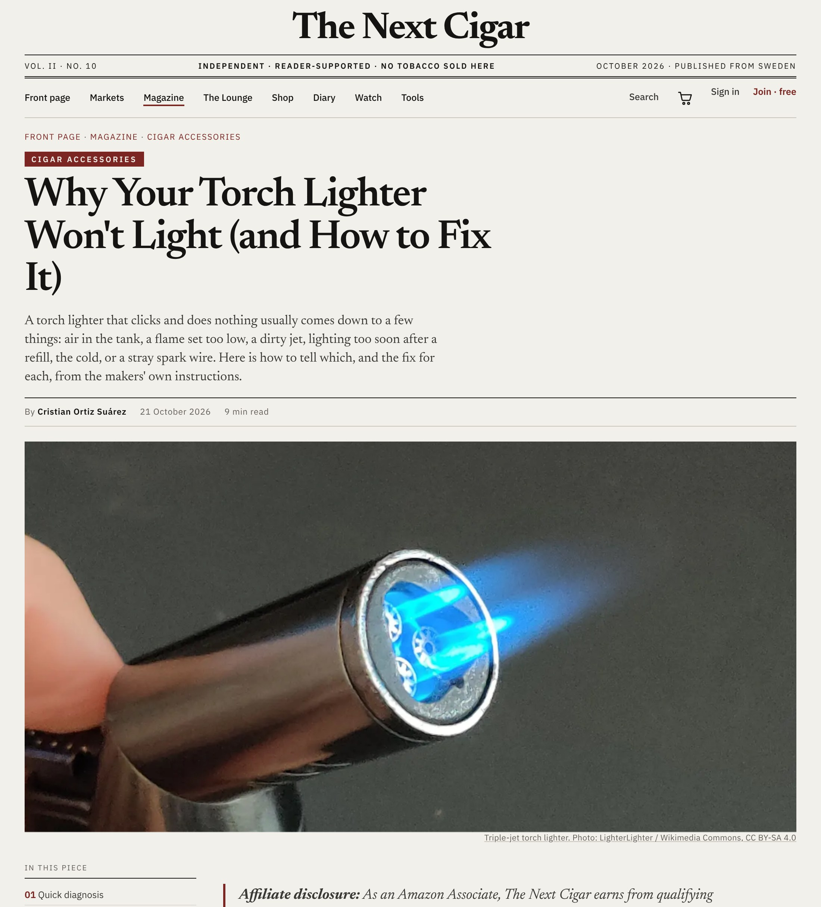

Before you bin the lighter: the fixes, from Xikar's, Colibri's and Vector's own instructions. Swipe →
| Sparks, no flame, worse after each refill | Air in the tank |
| Fails right after a refill | Lit too soon |
| Has fuel, sparks, won't catch | Flame too low |
| Weak, uneven flame | Dirty jet |
| Fine indoors, dead outside in winter | Cold butane |
Five causes cover most torch lighters that click and do nothing.
| Step 1 | Turn the flame adjuster to its lowest setting. |
| Step 2 | Point the refill valve away from your face. |
| Step 3 | Press the valve with a small screwdriver until the hissing stops. |
| Step 4 | Refill. |
Every refill lets in a little air, and over time the lighter pushes out air instead of gas. Xikar says to bleed before every refill.
| Colibri | 2 minutes |
| Zippo butane inserts | 2 minutes |
| Xikar | 3–4 minutes |
| Vector | 5–10 minutes |
Liquid butane from the can is cold and the pressure needs time to settle. If gas sprays back while you fill, stop: it's full.
| Too low | Turn the adjuster towards + a little at a time. |
| Too high | Lights, then blows itself out? Turn it down a notch. |
| Dirty jet | Wipe with a little alcohol, let it dry 2–3 minutes, then short bursts of low-pressure air. |
Low-grade butane leaves residue that clogs the jet. Xikar says it will damage a lighter.
Colibri says to let it reach room temperature. Keep it in an inside pocket, not a coat or a cold car.
Hissing when you're not pressing means a leaking valve. Stop using it and send it for service.